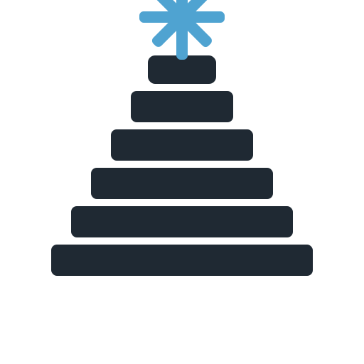
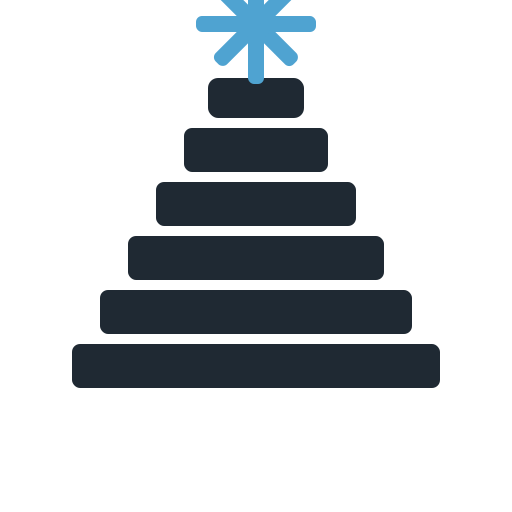

Skadi
A clean Spring Boot foundation for data services—built for extensibility, testability, and production-grade operations.
Repository →Minimal, composable building blocks for data-centric systems—designed for clarity, observability, and enterprise delivery.
A clean Spring Boot foundation for data services—built for extensibility, testability, and production-grade operations.
Repository →Opinionated patterns for provenance, metadata, and runtime safety—without locking you into a single stack.
Browse org →Practical, copy/paste-ready guidance for wiring projects into CI/CD, publishing, and secure distribution.
Start here →